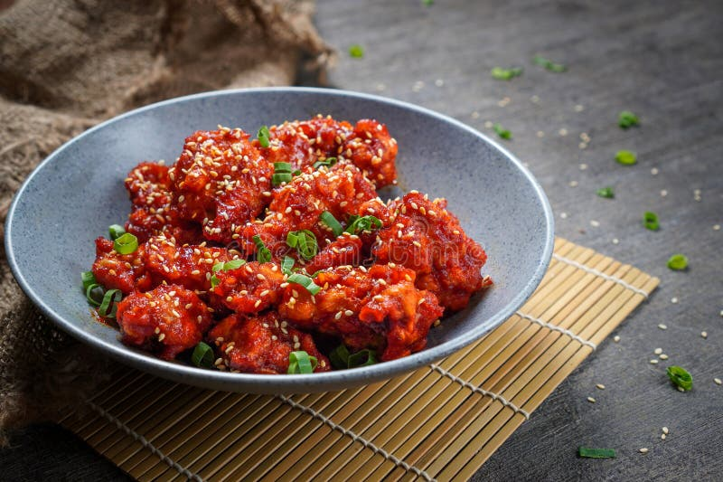

Return Home
Yangnyeom-tongdak (Spicy AF!)

Description
Yangnyeom-tongdak represents the vibrant evolution of Korean fried chicken, where twice-fried chicken meets an intoxicating sweet-spicy sauce that has captured palates worldwide. This iconic dish showcases chicken that achieves the pinnacle of textural perfection – a shattering crisp exterior giving way to impossibly juicy meat within. But it's the glossy, crimson sauce that elevates this dish to legendary status, creating an intricate dance of gochugaru's deep chile warmth, garlic's savory punch, and a subtle sweetness that weaves everything together.
Each piece glistens with its lacquered coating, the sauce clinging to every ridge and crevice of the crunchy exterior. This creates an experience where each bite delivers multiple waves of flavor – first the sweet-spicy glaze, then the satisfying crackle of the crust, and finally the succulent meat underneath. The dish typically arrives at the table still glistening, often garnished with a scattering of roasted sesame seeds that add subtle nuttiness and visual appeal.
In Korean dining culture, yangnyeom-tongdak often serves as the centerpiece of social gatherings, its vibrant red pieces beckoning diners to dive in with their hands. The sauce's complexity reveals itself gradually – starting with an initial sweet note that blooms into a warming heat, while underneath, umami notes from soy and garlic create depth that keeps you reaching for just one more piece. This dish embodies the perfect balance of heat, sweet, and savor that has made Korean cuisine a global phenomenon.
Ingredients
General:
- 2 pounds chicken wings
- 0.5 teaspoon kosher salt
- 0.5 teaspoon ground black pepper
- 0.5 cup potato starch
- 0.25 cup all purpose flour
- 0.5 teaspoon baking soda
- 2 large eggs
- 1 tablespoon toasted sesame seeds
For the sauce:
- 2 teaspoons vegetable oil
- 3 garlic cloves, minced
- 0.33 cup ketchup
- 0.33 cup rice syrup
- 0.25 cup gochujang (Korean hot pepper paste)
- 2 teaspoons white vinegar
- 2 teaspoons vegetable oil
- corn (or vegetable) oil for frying
Steps
Start the first fry:
- Heat 2 inches of oil in a large heavy frying pan or pot over medium hight heat for about 10 to 12 minutes until the oil temperature reaches 330-350ºF. I used my 12 inch pan but if your pan is smaller, work by batches. If you don’t have a thermometer, test it by dipping one piece of chicken in the oil. If it bubbles, it is ready.
- While the oil is heating, combine chicken, salt, ground black pepper, starch, flour, baking soda, and eggs in a large bowl. Mix altogether well by hand.
- Add the coated chicken to hot oil one by one. Fry them for 12 minutes until the all sides of the chicken are golden brown and crunchy, turning over with tongs.
- Take out the chicken with tongs or a large slotted spoon to wire strainer over a bowl to remove the excess oil.
Make seasoning sauce:
- Heat the 2 teaspoons vegetable oil in a large skillet over medium high heat. Stir in garlic until light brown for about 30 seconds. Add the ketchup, rice syrup, gochujang, vinegar and stir well with a wooden spoon. Reduce the heat to low and stir until bubbling. Remove from the heat.
Start the second fry:
- Let the oil heat up for 2 minutes over medium high heat until it reaches 330-350ºF.
- Fry the chicken one more time, turning over with tongs for about another 12 minutes until very crunchy.
- Reheat the sauce over medium high heat until it’s bubbling again. Add all the hot crunchy chicken and mix well with a wooden spoon and tongs.
Finish and serve:
- Sprinkle with the sesame seeds and transfer to a serving plate.